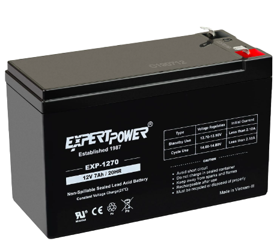
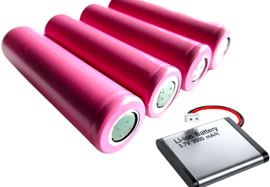
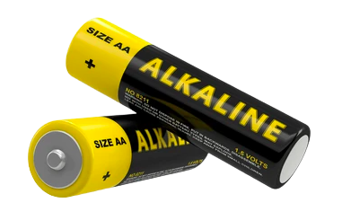
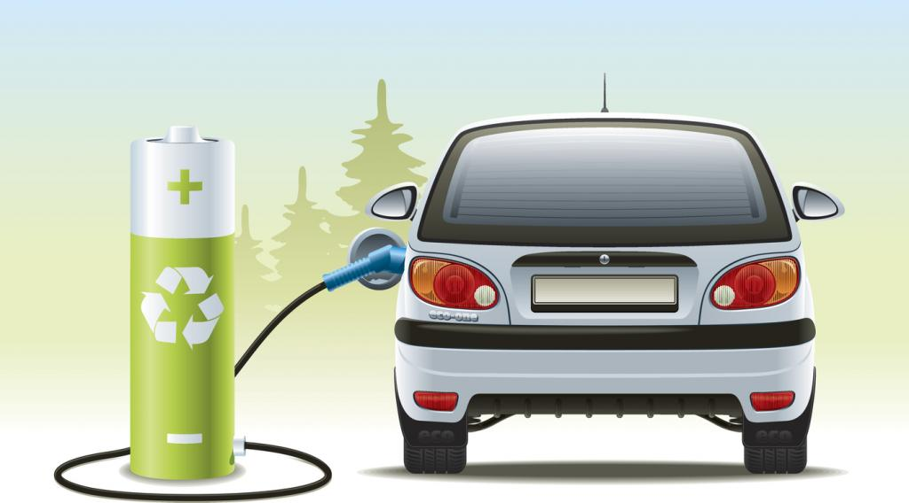
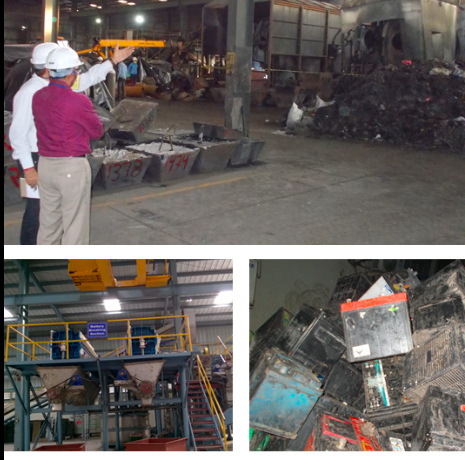
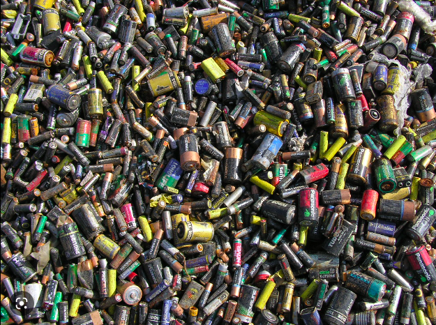

Introduction
Batteries are an essential part of modern life. They power our phones, laptops, and cars, among other things. However, batteries also have a negative impact on the environment. They contain toxic chemicals that can harm human health and pollute the air, water, and soil.
Batteries are widely used to power a range of devices, from mobile phones and laptops to electric cars and grid-scale energy storage systems. However, the production, use, and disposal of batteries can have significant environmental impacts, particularly in terms of pollution. Batteries can release a variety of pollutants, including heavy metals and toxic chemicals, during their life cycle, from the extraction of raw materials to their disposal at the end of their useful life. These pollutants can harm human health and the environment, and their impact can be particularly acute in areas with poor waste management and regulatory oversight.
As the demand for batteries continues to grow, it is important to consider the environmental implications of this technology and to explore ways to mitigate its negative impacts on the planet.
Types of Batteries
There are several types of batteries, each with its own environmental impact:
- Lead-acid batteries: Lead-acid batteries are commonly used in vehicles, boats, and backup power systems. They contain lead, which is a toxic heavy metal that can cause health problems such as kidney damage and developmental delays. When lead-acid batteries are not recycled or disposed of properly, they can release lead into the environment, polluting soil and water sources.

- Nickel-cadmium batteries: Nickel-cadmium batteries are used in cordless power tools, toys, and other portable devices. They contain cadmium, a toxic heavy metal that can cause kidney damage and cancer. When nickel-cadmium batteries are not disposed of properly, they can release cadmium into the environment, polluting soil and water sources.

- Lithium-ion batteries: Lithium-ion batteries are widely used in consumer electronics, electric vehicles, and renewable energy systems. They are made up of toxic chemicals such as lithium, cobalt, and nickel, which can have harmful effects on human health and the environment. If not recycled or disposed of properly, lithium-ion batteries can release these chemicals into the environment, contaminating soil and water sources.

- Alkaline batteries: Alkaline batteries are commonly used in household appliances such as remote controls and flashlights. They contain chemicals such as zinc, manganese, and potassium hydroxide, which can be harmful to the environment if not disposed of properly. When alkaline batteries are thrown into the trash, they can end up in landfills, where their chemicals can leach into the soil and groundwater.

Environmental Impact
- Soil Population: Heavy metals and other toxic chemicals present in batteries can seep into the soil, contaminating it and affecting plant growth. This can have a ripple effect on the ecosystem, as plants and soil organisms may be unable to thrive in contaminated soil.
- Water Population: Battery waste can also contaminate water sources, including rivers, lakes, and groundwater. This can harm aquatic life and also impact human health if the contaminated water is used for drinking or irrigation.
- Air Pollution: Batteries can release harmful gases and particles into the air when they are incinerated or burned, contributing to air pollution and climate change.
- Landfill Contamination: When batteries are disposed of in landfills, their toxic chemicals can leach into the surrounding soil and groundwater, polluting the environment and potentially impacting nearby communities.
- Wildlife Impacts: Animals may mistake batteries for food and ingest them, leading to poisoning and even death. Battery waste can also disrupt wildlife habitats and ecosystems.
- Human Health Impacts: Exposure to heavy metals and other toxic chemicals present in battery waste can lead to serious health problems, including respiratory problems, neurological damage, and cancer.
Conclusion
Batteries are a necessary part of modern life, but they also have a negative impact on the environment. To minimize this impact, it's important to dispose of batteries properly and recycle them whenever possible.
In conclusion, battery waste can have significant negative impacts on the environment, and it is important to properly dispose of batteries to avoid these harms. Battery recycling programs and proper waste management practices can help mitigate these impacts and reduce the environmental footprint of battery use.
Battery Waste Management in India



India has recently implemented new Battery Waste Management Rules, which require producers to use a minimum percentage of recycled materials recovered from old waste batteries to manufacture new batteries. The rules also mandate that all waste batteries are to be collected and sent for recycling or refurbishment, and prohibit disposal of batteries in landfills.The new rules were introduced in August 2022 and aim to promote more eco-friendly management of waste batteries.Additionally, the rules allow for the exchange of Extended Producer Responsibility (EPR) certificates between producers and recyclers/reprocessors to meet EPR mandates